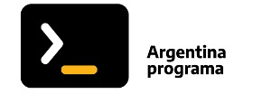

-
Colegio Domingo Zipoli
-2007-2011

Realicé la mayoría de mi educación primaria en la Escuela de Niños Cantores de Córdoba Domingo Zipoli.
-
Colegio Nacional de Monserrat
-2013-2017
Realicé la mayor parte de mis estudios secundarios en el Colegio Nacional de Monserrat.
-
Licenciatura en composición coreografica
-(2023-actualidad)

Actualmente me encuentro cursando la carrera licenciatura en composición coreográfica de la Universidad Provincial de Córdoba.
-

-
Argentina Programa
-(2022-actualidad)
Full Stack Developer Jr
Argentina Programa es un curso avalado por el Ministerio de Desarrollo Productivo, la Cámara de la Industria Argentina del Software (CESSI) y el Instituto Nacional de Tecnología Industrial (INTI) que consta de dos partes, la primera #SeProgramar donde se adquieren los fundamentos básicos de la programación y #YoProgramo donde se profundizan los conocimientos y se adquieren las habilidades y herramientas necesarias para convertirse en programadores web full-stack junior.